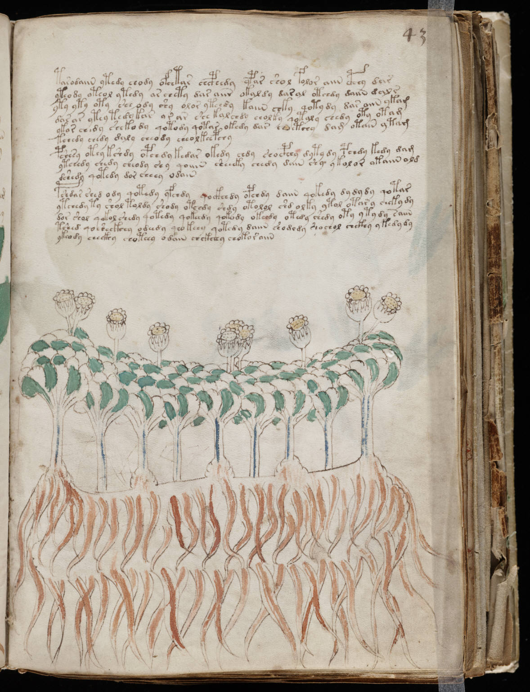

f43r
1tarodaiin ytedy chody ofchtar chcphedy ypar shol folor aiin cphhy dar2yteody oteol ytedy ar chety dar aiir okaldy daral otchdy daiin dal s3yty yty oty she ody shy olor ytch*y kaiin chky qotydy dar aiin ykam4dasar ytey tedy kar or ar shekalchdy cholty qotaly chedy oty otam5ykor ch*dy shekody qotody qotar okedy dar choetchy dam otain ytam6kchedy chedy daly cheody cheolkeepchy7pshesy otey kshdy opchdy kedar okedy chdy shocphhy dytydy pchdy kedy dam8ytchedy chedy cheody shy qoiiin sheeeky chedy dain shy ykolor otaiin old9dshedy qotedy dor cheey odain10pshdar shed ody qotedy yfchdy qockhhdy opchdy daiin qokedy dydydy qotar11ytchedy ty shol toldy shody otchdy shdy otolol shd olky ytol otary cheky dy12dor shol qokol shedy qotedy qokehdy qokody okehdy otedy shedy oty yty dy saiin13tshed qosheckhhy odeedy qeokehy qotedy daiin shodody shochol chckhy ykedy dy14ykeody checkhy chotehy odain chckhhhy chokor aiin
